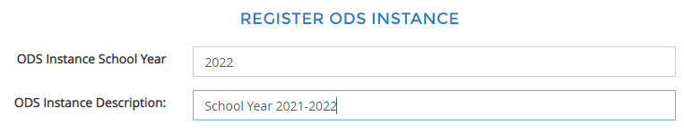
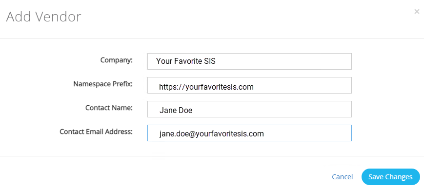
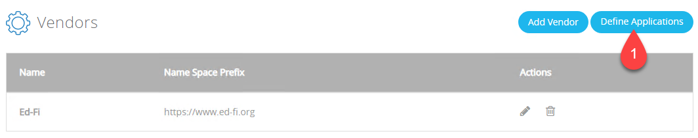
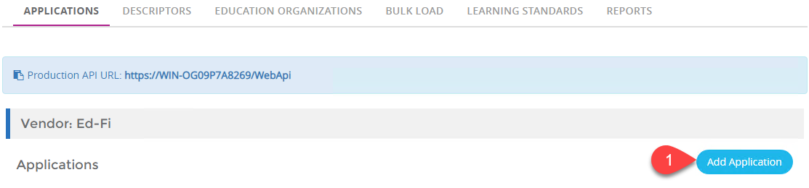
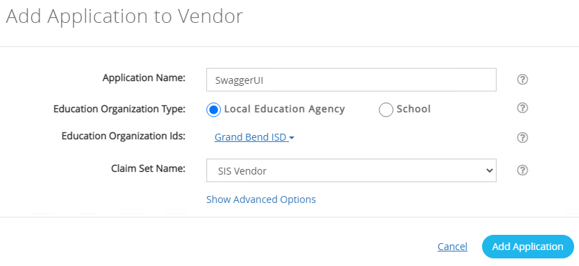
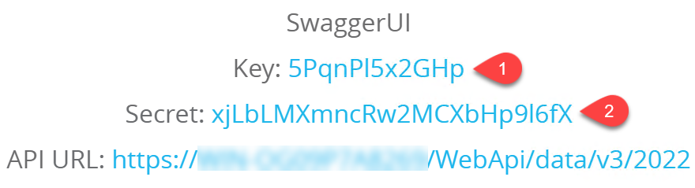
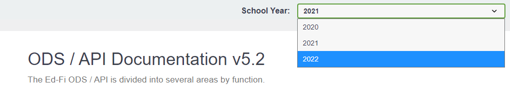
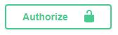
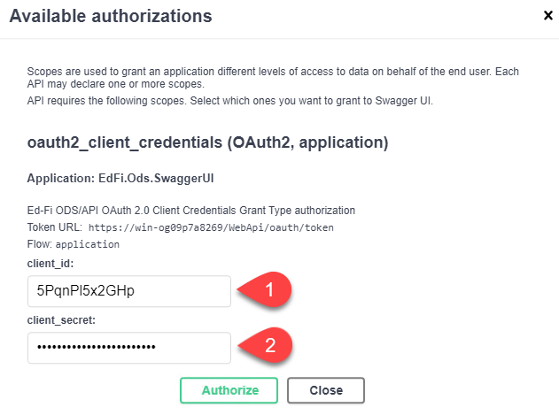

This Virtual Machine Contains the Ed-Fi ODS / API & the Student Engagement Starter Kit
The purpose of this virtual machine is to showcase the Student Engagement in the LMS Starter Kit. The COVID-19 global pandemic has created an unprecedented challenge in measuring and evaluating how engaged students are in their learning - be it remote, in-person, or hybrid. This Starter Kit, leveraging the LMS Toolkit, provides a solution environment in which data from an LMS is collected and combined with student demographic and assessment data from other key systems to help paint a more accurate picture of student engagement.
Contents
- Beginning at the End
- Understanding the Components of the Starter Kit
- Using the Starter Kit Components
- Putting It All Together
Beginning at the End
The end result of this Starter Kit is a set of dashboards in Power BI, designed to empower educators and administrators to better understand—and act on— student trends with respect to assignment completion in a Learning Management System (LMS). This starter kit contains a small set of sample data to "light up" the visualizations. The names and data are realistic—but they are not real.
→ To access the Power BI dashboards, simply double-click the Power BI file on the desktop.
Understanding the Components of the Starter Kit
As with all other Ed-Fi Starter Kits, the Ed-Fi Technology Platform is at the heart of the solution. In a small variation from the typical solution, a new piece has been introduced: the LMS Toolkit. Typically, and preferably, application vendors push data into the Ed-Fi API, which then stores those data in the Ed-Fi ODS database. For example, a Student Information System (SIS) vendor would push roster, scheduling, and grade data into the API. In this Starter Kit, our aim is to integrate data from LMSs. These LMS vendors make their own proprietary APIs available for queries, and currently they do not support pushing data to an API. Therefore the LMS Toolkit has an unusual part to play: it pulls data from the upstream LMS and stores it in the ODS, alongside the data provided by the SIS and other vendors. The supported LMSs are:
- Canvas
- Google Classroom
- Schoology
Once data are stored in the ODS database, the Ed-Fi Analytics Middle Tier provides a set of views, some of which are custom to this starter kit, that simplify the process of extracting data from the normalized ODS tables. The Power BI dashboards then read the data from those views in order to support their visualizations.
Three other important tools are shown in the diagram below:
- ODS Admin App, providing administrative management of the API and ODS,
- Swagger UI, a web application that documents the API and allows you to run sample calls against it,
- Console Bulk Loader, a console (command line) application for bulk uploading xml files into the Ed-Fi API.
Using the Starter Kit Components
Ed-Fi Technology Platform
The following URLs will let you access the three web applications in the Ed-Fi Technology Platform:
- Ed-Fi ODS / API Suite 3, version 5.2
- Ed-Fi ODS Admin App for Suite 3, version 2.2
- SwaggerUI for Suite 3, version 5.2
A good first place to start is with Admin App, where you can setup authentication credentials for using Swagger UI. When you first access the site, you'll go through a few initialization steps and then you'll need to create a vendor and application. The following bullet points will help guide you on the path.
- When creating a new user account, be sure to use a password that you will remember, as there is no process for recovering a lost password.
- One of the initialization steps says that you need to "restart the ODS". To do so, open program "IIS" (aka InetMgr) from the Windows start menu, then right-click the Ed-Fi website and choose the "Restart" command.
- The Ed-Fi API is running in "YearSpecific" mode, meaning that there is a SQL Server database
dedicated specifically to the school year, as opposed to having many school years in the same
database. You will be presented with a screen like the following, where you'll need to enter
2022as the school year.
 - When the initialization is done, create a vendor. The information you use doesn't really
matter in this case, but in a realistic scenario let's say you were connecting a company
called Your Favorite SIS. Then you might enter something like this:
 -
Now that you have a vendor, you need to create an Application.

That button takes you to the next screen:
 - On this next screen, enter "SwaggerUI" as the application name, connect it to a Local Education
Agency,
and choose a Claim Set. The Claim Sets establish the scope of permissions. By choosing the SIS
vendor
claim set, the credentials we're about to create will have the ability to access all of the
resources
in a large subset of the Ed-Fi API.
 - Once you click the "Add Application" button, you'll be given a screen that contains a random Key
and Secret. These are the secure credentials that you need to plugin to Swagger UI — or,
if
this
were a production deployment, you would give directly to the vendor. Be sure to copy and paste
both
values somewhere, as you won't be able to access them again.

For more information on using Admin App, see the User Guide.
Now that you have a key and secret, you can try them out in Swagger UI.
- On the first screen, in the upper-right corner select 2022 from the dropdown.
 - Now click into the Resources using the link on the page.
- You'll see a long list of resources. In order to use any of them, you need to authenticate.
Click on
the lock button.
 - And now enter the key and secret that you created in Admin App. 
For more information on using SwaggerUI, see Using the Online Documentation.
LMS Toolkit
The components of the LMS Toolkit all run at the command line using the poetry command.
Each component has its own configuration and execution instructions, highlights of which are
provided
below.
To run the commands as shown, you need to open PowerShell and change to the
c:\ed-fi\LMS-Toolkit-main\src directory.
The three Extractors will not work out of the box, as they require additional security
configuration.
You can
only connect to these LMSs if you have an administrative account in your education agency's account.
Canvas Extractor
Using Visual Studio Code, open c:\ed-fi\LMS-Toolkit-main\src\canvas-extractor\.env. In
there
you'll need to customize the CANVAS_BASE_URL and CANVAS_ACCESS_TOKEN
values.
The Base
URL will be something like "https://your-school-district.instructure.com". To get an access token,
open
that URL, then navigate to Account > Settings, scroll down to "Approved Integrations," and click the
"New Access Token" button. Once that is done, you can run in PowerShell:
push canvas-extractor
poetry run python edfi_canvas_extractor
popGoogle Classroom Extractor
Using Visual Studio Code, open
c:\ed-fi\LMS-Toolkit-main\src\google-classroom-extractor\.env. In there
you'll need to customize the CLASSROOM_ACCOUNT value by inserting the email address for
an administrative account. In addition, you must create a service-account.json file.
- Sign-in to the API
Library with the administrative account used in the
.envfile. - Create a Service Account and API Key on the IAM
& Admin: Create service account page.
- Give the new service account a name like "Ed-Fi Extractor" and click Create.
- Grant the service account the "Viewer" role and click `Continue` then Done, skipping step 3: "Grant users access to this service account".
- The new service account will be displayed in a table. Click on the three dots for the account and select Manage Keys.
- On the next page, click the `Add Key` button, then choose JSON and click "Create" in the dialog box.
- A JSON file will be downloaded from your browser, which is the API key.
Rename it to
service-account.json. Save this into the project directory. - Finally, click on the service account to view details and copy the Unique ID field for the next step.
- Specify the access scope for the account on the Domain-wide
Delegation page.
- Add a new API client and provide the service account Unique
ID (
client_idin the json file) in theClient IDfield. - Paste the following scopes into the OAuth scopes field and
click "Authorize":
https://www.googleapis.com/auth/admin.directory.orgunit, https://www.googleapis.com/auth/admin.reports.usage.readonly, https://www.googleapis.com/auth/classroom.courses, https://www.googleapis.com/auth/classroom.coursework.students, https://www.googleapis.com/auth/classroom.profile.emails, https://www.googleapis.com/auth/classroom.rosters, https://www.googleapis.com/auth/classroom.student-submissions.students.readonly, https://www.googleapis.com/auth/admin.reports.audit.readonly
- Add a new API client and provide the service account Unique
ID (
Now you can run the Google Extractor:
push google-classroom-extractor
poetry run python edfi_google_classroom_extractor
popSchoology Extractor
Using Visual Studio Code, open
c:\ed-fi\LMS-Toolkit-main\src\schoology-extractor\.env, and then sign-in
to the Schoology API to acquire
an administrative key and secret. Enter these values into the .env file's
SCHOOLOGY_KEY and SCHOOLOGY_SECRET variables. Now in PowerShell, run:
Now you can run the Google Extractor:
push schoology-extractor
poetry run python edfi_schoology_extractor
popLMS Data Store Loader
The above commands created CSV files and saved them to disk. These can be used by themselves
for all kinds of interesting analyses; please see the readme file in
c:\ed-fi\LMS-Toolkit-main\src\notebooks for information on how to run
the sample Jupyter Notebooks we have provided (you can open and read this file easily with Visual
Studio Code).
But for the purpose of this Starter Kit, we need to move the data into SQL Server — in fact,
into the same ODS database that has all of the edfi.* tables used by the Ed-Fi API.
To do so, you can run the LMS Data Store Loader from PowerShell (no additional configuration
required!):
push lms-ds-loader
poetry run python edfi_lms_ds_loader
popYou can open SQL Server Management Studio to see the end-result:
- Connect server
localhostand databaseEdFi_ODS_2022 - Run a few queries on the tables in the
lms.*schema. Examples:
select * from lms.LMSUser; select * from lms.Assignment;
LMS Harmonizer
The lms.* tables used by the LMS Data Store Loader are modeled to match the CSV files,
and
there
is no direct connection between them and the SIS data. The LMS Toolkit comes with an extension to
the Ed-Fi ODS/API, called LMSX. This extension has two tables in it, for storing the
Assignment and Assignment Submission, with relationships back to the edfi.* tables. The
LMS Harmonizer package provides the logic for making these connections. In order to connect
the LMS data to SIS data in the Ed-Fi ODS, we have to make a few concrete statements about
how data are stored in the LMS:
- The section or course in the LMS must have a reference to the Section Identifier from the SIS,
and that Section Identifier in the SIS must be a unique value in the account.
- Canvas: save the SIS's section identifier in the Section's
sis_section_idvalue. - Google Classroom: save the SIS's section identifier as a Course Alias in the format
EdFiLMS.[insert actual section identifier here] - Schoology: save the SIS's section identifier in the Section's
section_school_codevalue.
- Canvas: save the SIS's section identifier in the Section's
- Each student in the LMS have a link back to the student in the SIS. For Canvas and Schoology,
it is assumed that the Student's
UniqueIdvalue (the local, SIS-specific identifier) has been loaded into the student record (in Canvas, use thesis_user_idfield, and use theschool_uidfield in Schoology), whereas in Google Classroom we must match by the student's e-mail address.
When these statements are true, then the LMS Harmonizer can match an LMS Section to a SIS Section,
and an LMS User to a SIS Student. After matching these records together, the Assignment and
Assignment Submission data can be copied to the lmsx.Assignment and
lmsx.AssignmentSubmission tables. To run the Harmonizer, in PowerShell:
push lms-harmonizer
poetry run python edfi_lms_harmonizer
popPlease note: if you run one of the extractors on your own LMS instance, the data you download will not match the fictional Grand Bend school district data in the ODS. Therefore the LMS Harmonizer will not be able to match up any records unless by lucky coincidence. To work around this, you could create some new "SIS-style" records using SwaggerUI, and then run the Harmonizer.
Power BI Dashboards
For arguments' sake, let's say that you have been able to upload new data into the LMSX extension tables in the ODS database. Now you want to see them in the Power BI Dashboards.
For best performance, these reports are setup to cache data instead of directly querying the database for every user interaction. That means the data will need to be refreshed. Click on the Refresh button in the Power BI command ribbon.
You will be asked to confirm the database connection; just accept what is there. Then you will get a warning that Power BI Desktop is unable to connect to SQL Server over an encrypted connection. This is occurring because SQL Server is in its default state, using a self-signed certificate, and Power BI does not "trust" that certificate. Because we're not communicating over the open Internet — just from one application to another on the same demonstration server — this is an acceptable risk.
Putting It All Together
To summarize, in order to use this system you would:
- Setup the SIS vendor to connect to your Ed-Fi ODS/API by giving them a key and secret generated using ODS Admin App.
- In your LMS, make sure that sections and users have the appropriate configuration data to match them to SIS records.
- Setup the
.envfile for the appropriate extractor, using the unique authentication credentials for your account on the given LMS. - Manually, or using a scheduled task or workflow, run the LMS Toolkit packages in the following sequence:
- each relevant Extractor,
- the LMS Data Store Loader,
- and the LMS Harmonizer
- Finally, refresh the data in Power BI Desktop.